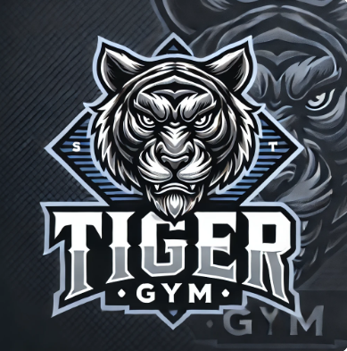

HISTORIA
Quienes somos: Tiger Gym es un centro deportivo nacido en 1999, bajo la dirección de la familia de profesores Manzano Rodríguez. A lo largo de 25 años hemos enfocado nuestro trabajo en la población más joven de la colonia Ampliación Guaycura y alrededores, en la ciudad de Tijuana B.C.
MISIÓN
Contribuir con la comunidad a desarrollar en la población, sobre todo en la más joven, una cultura de la salud y el cuidado personal, promoviendo los valores intrínsecos del físico constructivismo y aplicando la teoría de la educación para que nuestros atletas adquieran conocimientos, habilidades y destrezas más allá de solo desarrollar los músculos.
VISIÓN
Ser un referente en la comunidad y en toda la región, como un centro deportivo del que emerjen, no solo atletas destacados en el físico construcivismo, sino seres humanos integrales con valores, destrezas, habilidades y conocimientos que les motiven a ser mejores en todo lo que emprendan.


©2025. Derechos reservados
Desarrollado por:
Melissa Mayoral Ramos